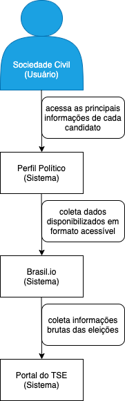

Documentação arquitetural do Perfil Político
Autores
Este documento foi produzido por Marcella Medeiros Siqueira Coutinho de Almeida.
- Matrícula: 117110492
- Contato: marcella.almeida@ccc.ufcg.edu.br
- Projeto documentado: https://github.com/okfn-brasil/perfil-politico
Descrição Arquitetural
Este documento descreve parte da arquitetura do projeto Perfil Político da Open Knowledge Brasil, sendo essa descrição baseada principalmente no modelo C4.
É importante destacar que não será descrita toda a arquitetura do Perfil Político, dado que existem features que, apesar de já estarem no repositório, ainda não se encontram na versão final do projeto, a exemplo da função de apresentar os tweets dos candidatos.
Também é válido ressaltar que a interface do projeto, feita em JavaScript, HTML e CSS se encontra em outro repositório e não entra diretamente na descrição arquitetural (apesar de ser citada).
Descrição Geral e Objetivos
Perfil Político é uma plataforma criada para comparar e conhecer o histórico dos candidatos às eleições, nos cargos de: Deputado Federal, Deputado Estadual, Deputado Distrital, Senador, Governador e Presidente. O perfil de cada candidato traz informações de idade, sexo, escolaridade e ocupação, como também de histórico partidário e patrimônio declarado.
O objetivo é de trazer à sociedade civil uma maneira acessível de se visualizar informações dos candidatos às eleições e permitir uma maior transparência, dado que o Portal do TSE disponibiliza esses dados de forma bruta. Para mais informações a respeito do projeto, clique neste link.
Contexto
Considerando o objetivo do projeto, tem-se então como usuário a própria sociedade civil — cidadãos brasileiros buscando informações sobre os candidatos às eleições do país.
Para tornar essas informações fáceis de visualizar ao usuário, o sistema do Perfil Político coleta os dados disponibilizados através da plataforma Brasil.io, o qual reúne dados públicos de diferentes portais do país na forma de datasets. Para esse processamento, os dados foram coletados do repositório do Portal do TSE, com as informações ainda brutas.

Containers
Para a seção de Containers, é importante considerarmos 3 (três) para a arquitetura do Perfil Político: sua API, o Banco de Dados e o Pré-processador de Dados. O primeiro é um conjunto de rotinas e padrões de programação para acessar a base de dados, desenvolvido em Python através do framework Django.
A API tem os seguintes endpoints:
GET /api/candidate/<year>/<state>/<post>/
- Lista todos os candidatos de um determinado estado para um posto específico.
GET /api/candidate/<pk>/
- Retorna os detalhes de um determinado candidato.
GET /api/stats/<year>/<post>/<characteristic>/
- Apresenta as estatísticas nacionais para uma determinada característica num posto selecionado.
GET /api/stats/<state>/<year>/<post>/<characteristic>/
- O mesmo que o anterior, mas agrega por estado.
O Pré-processador de Dados é o que possibilita que os dados estejam limpos e organizados de maneira compreensível, que permita a construção dos gráficos. Para que esse pré-processamento ocorra, faz-se uso de Python e do Jupyter. Por fim, o Banco de Dados foi implementado em PostgreSQL e tem por objetivo armazenar todas as informações coletadas da plataforma do Brasil.io já pré-processadas.

Componentes
Dos containers apresentados, agora faz-se necessário destacar os componentes neles presentes.
Para o container relacionado ao pré-processamento, temos os componentes do Tratamento de Dados e do Coletor de Dados. Este último é o responsável por, utilizando Django, realizar a coleta dos dados disponibilizados através de datasets na plataforma do Brasil.io, enquanto o componente do Tratamento de Dados é o componente que utiliza o Jupyter para limpar e organizar os dados da maneira que devem ser apresentados na plataforma.
Conforme mencionado anteriormente, a interface do Perfil Político encontra-se em um repositório separado, mas para a análise dos componentes ela deve ser citada, pois representa o que aqui foi chamado de Interface de Acesso. Este componente é o contato do usuário com a API e é através da Interface de Acesso que se passa para o componente seguinte da API do projeto, o Buscador de Dados. Implementado em Python, ele recupera os dados solicitados no Banco de Dados para que, na interface, eles sejam apresentados da maneira adequada (as visualizações são realizadas utilizando D3).

Visão da Informação
Nessa seção é importante relembrar que o percurso dos dados no Perfil Político é encurtado pela coleta das informações em formato acessível fornecidas pelo Brasil.io. Dessa forma, o projeto não tem de lidar com a etapa inicial de raspagem dos dados brutos do Portal do TSE, tendo eles já disponibilizados na forma de datasets.
Assim, o fluxo de informações se dá a partir da disponibilização dos dados no Brasil.io e da recuperação destes por parte do Perfil Político, que logo em seguida trata esses datasets recuperados, deixando-os devidamente limpos e organizados para a futura geração dos gráficos. Desse ponto, esses dados são armazenados no banco de dados e repassados assim que solicitados.